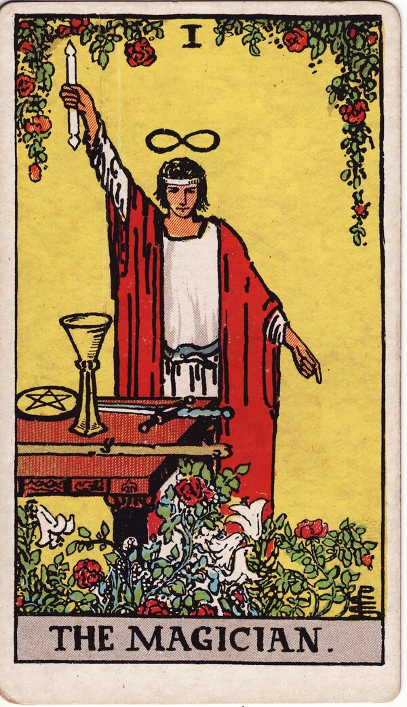

Major Arcana · Card 1
The Magician Tarot Card Meaning
The Magician is pure willpower - new opportunity and the power to manifest, with everything you need already at your fingertips. Want to know what it means in your spread? Every reader on our line is hand-vetted - connect in under 60 seconds, $1 for your first minute, hang up anytime.
- Hand-vetted readers
- Available 24/7
- Hang up anytime

The Magician Card - What It Shows
The Magician generally symbolizes new beginnings and opportunities. He stands with one arm stretched toward the Universe and the other pointing down to the earth, representing the connection between the spiritual and physical domains. In front of him is a table holding the four tarot symbols - a cup, a pentacle, a sword, and a wand - each representing one of the four elements: water, earth, air, and fire. This shows he has everything he needs to manifest his intentions into being. Above his head is the infinity symbol, and around his waist a snake biting its tail; both show his access to limitless potential.
The Magician Upright Meaning
Upright, The Magician is the master manifestor. A new opportunity is here, and you have the skill, resources, and will to make something real of it. This card is a green light for focused action - the alignment of intention and ability. What you need to begin is already in your hands; the work is to use it.
The Magician Reversed Meaning
Reversed, The Magician suggests you may be working contrary to your own creativity. It can also show discomfort with taking a leadership position or voicing your ideas, often due to a lack of courage rather than a lack of ability. The potential is there; something is blocking its expression.
The Magician as Advice
As advice, The Magician tells you to believe in your creativity. It urges you to think freely while exploring the subject at hand - to trust that you already hold the tools and to stop waiting for permission to use them.
The Magician in a Tarot Reading
As a Major Arcana card, The Magician points to a significant theme, not a passing detail. Its real meaning sharpens in context - the cards around it, its position, and the question you bring. That's where a live reading turns a general meaning into something you can act on. See all 22 cards on the Major Arcana meanings hub, or start a full phone tarot reading.
← The Fool · Next: The High Priestess →
What Does The Magician Mean for You?
A meanings list is the map; a live reading is the territory. We'll connect you with the right hand-vetted tarot reader in under 60 seconds. $1/min first call · 15 minutes for $10 · hang up anytime · 100% satisfaction promise.
Call (888) 920-6662 NowThe Magician - Frequently Asked Questions
What does The Magician mean upright?
New beginnings, opportunity, and the willpower to manifest - you have all the tools you need.
What does The Magician reversed mean?
Working against your own creativity, or holding back your ideas and leadership through lack of courage.
What is The Magician's advice?
Believe in your creativity and think freely while exploring the matter in front of you.
Is The Magician a yes or no card?
Leaning yes upright - it favors capable, decisive action - but position and surrounding cards always shape the answer.
Get Your Tarot Reading Now
Connected to a hand-vetted reader in under 60 seconds, the cards pulled on your real question, and you hang up with clarity.
Call (888) 920-6662